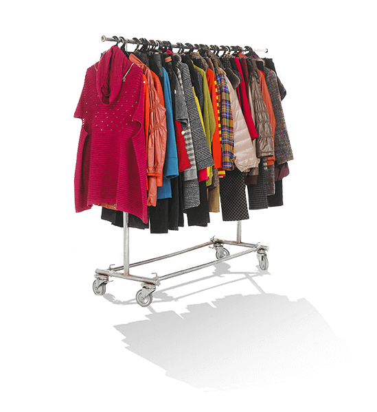

Transportation
Cars

Consumption
Shopping

Waste
Disposable plates, bottles, utensils
Climate and Weather Events Data Story
A data-driven look at how rising temperatures, emissions, and extreme weather events connect
Temperature Change
!! The chart uses fake starter data. Swap in with dataset later!!
Placeholder for a future temperature-focused visual
Carbon dioxide emissions
While greenhouse gases act as a heat-trapping layer in the atmosphere, yearly average temperatures in the United States can vary significantly due to short-term climate variability, including ocean cycles and regional weather patterns. As a result, the data shows noticeable year-to-year fluctuations rather than a perfectly smooth trend, yet we can still see how our CO2 emissions tend to allign with gradual increases in temperature.
This suggests a potential long-term relationship between rising emissions and warming trends, even if the connection is not perfectly consistent in individual years.
The outliers in the dataset are influenced by natural variability, or short-term climate events that temporarily mask broader trends. For example in 2014 we can notice a deviation influenced by the shift of the polar vortex which created intense cold waves, lowering temperatures.
Climate change quote maybe to transition to weather events section.
Extreme weather events
Use this section for interactive visual. There is a filter buttons and a D3 bubble map-style to build from in main.js.
add any necessary info here for elaborating on visual
Starter interactive view by event type
Temperature and disaster impact
The scatter plot reveals a positive relationship between temperatures and extreme weather event occurrence, the upward trend suggests that warmer years are generally associated with a greater number of weather-related disasters. This correlation indicates that rising temperatures are one of many factors influencing extreme weather. The data points to a broader long-term pattern in which warming may contribute to conditions that increase disaster risk.
Why this matters
Climate change affects many aspects of our lives, often in ways that are not immediately visible. Not only is it an environmental issue, its impacts go beyond rising temperatures and weather patters. Climate change brings economic consequences. Weather-related disasters such as hurricanes, floods, droughts, and wildfires cause billions of dollars of damage each year.
Beyond the economic impact, these extreme weather events deeply impact humans. Millions of people are affected whether indirectly by evacuations and disruptions to their daily life or directly through property loss, food insecurity. In some cases, these events result in numerous deaths.
Human exposure
While the economic damage caused by these extreme weather events is significant, the human cost can be great. The linked view helps show that human impact is not only financial, it is measured in lives disrupted and lives lost. These events leave lasting consequences that cannot be measured by financial damage alone.
From the chart on the right, we can see some years experienced weather events that affected millions of people. Typically, those impacted may be affected by having to evacuate, relocate, repair damages, or recover from disruptions.
Click a year in the deaths bar chart to update people affected
What can be done?
There are many ways you can reduce your carbon footprint and make an impact
Below you can see some daily activities in your life that you can swap out with eco-friendly alternatives to help. Even the smallest changes can make an impact if we all work together.
Cars
Shopping
Disposable plates, bottles, utensils

Public Transit

Thrifting

Reusable water bottles and containers